Compare 15 methods
Move between STFT, CQT, VQT, wavelets, Stockwell, reassigned and synchrosqueezed transforms, chroma, and more.
Open-source time-frequency analysis
SineSoda is a real-time VST3 analysis plug-in for researchers, engineers, educators, and anyone curious about sound. Compare 15 transforms on the same live input while the audio passes through unchanged.
macOS universal (Apple Silicon + Intel) · Windows x64 · VST3 · Apache-2.0
Compare the methods
These examples use the same analysis settings wherever possible, making it easier to see what each method reveals. Frequency views use an 8,192-point analysis and logarithmic display; chroma keeps its native twelve pitch-class rows.
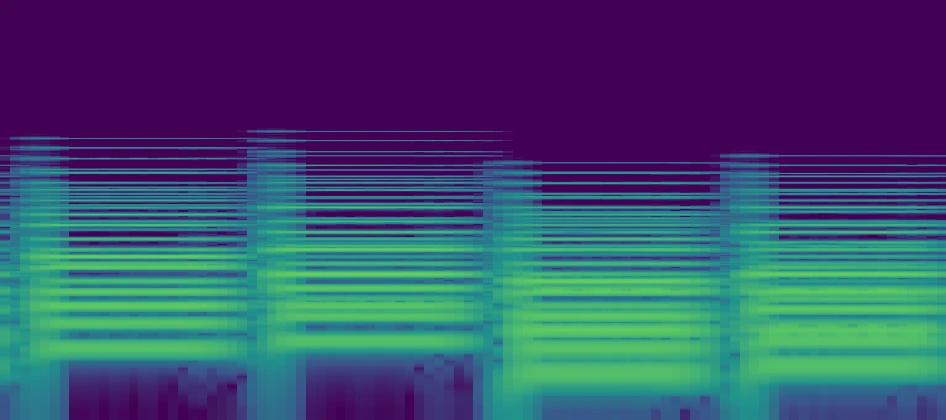
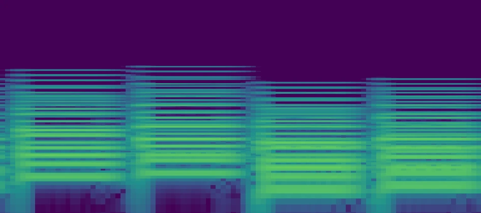
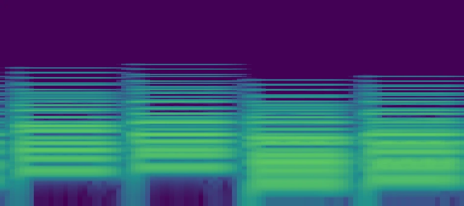
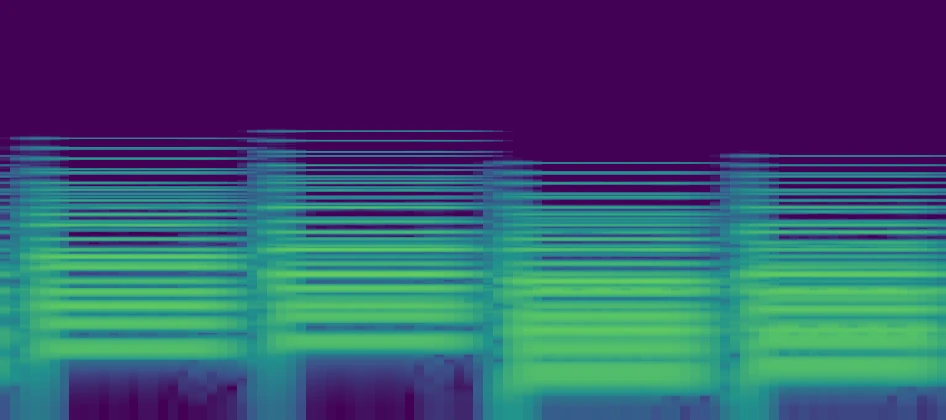
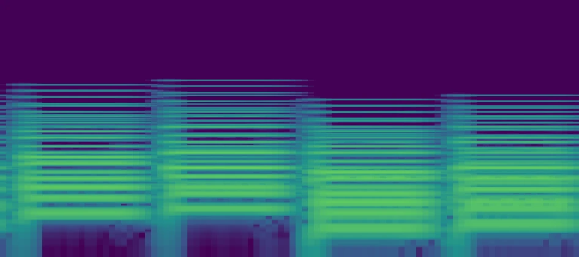
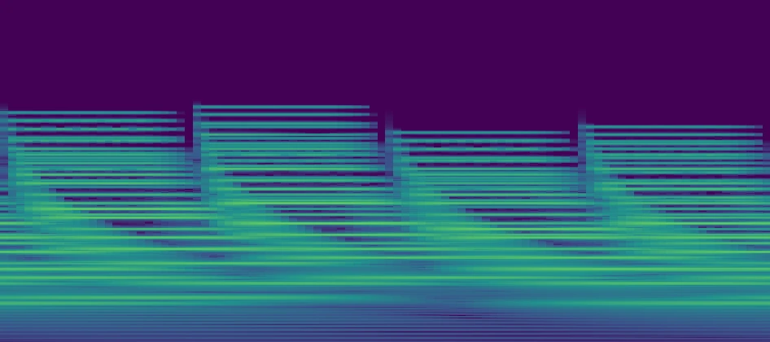
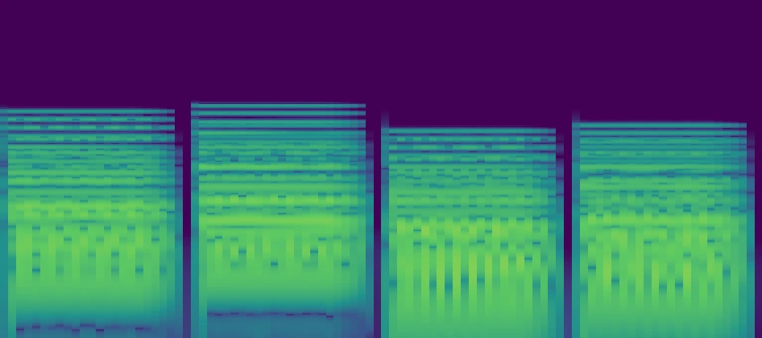
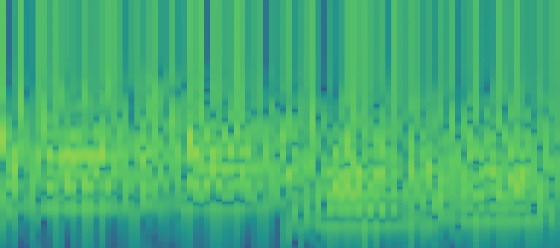
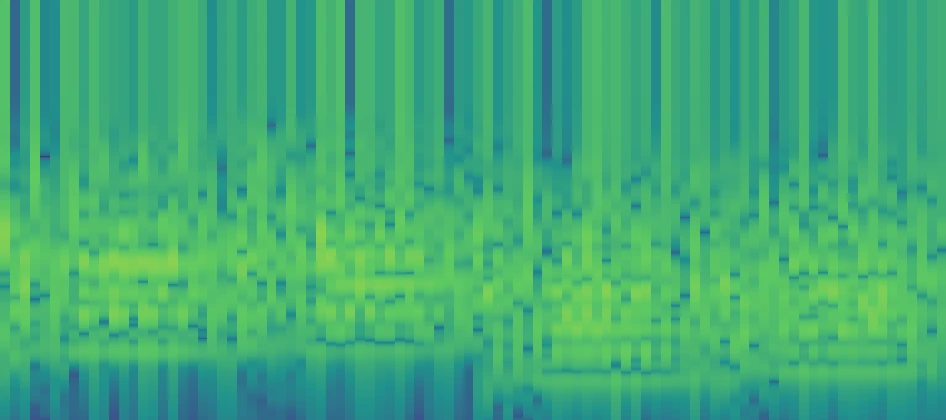
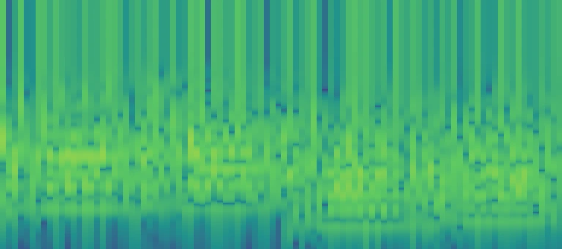
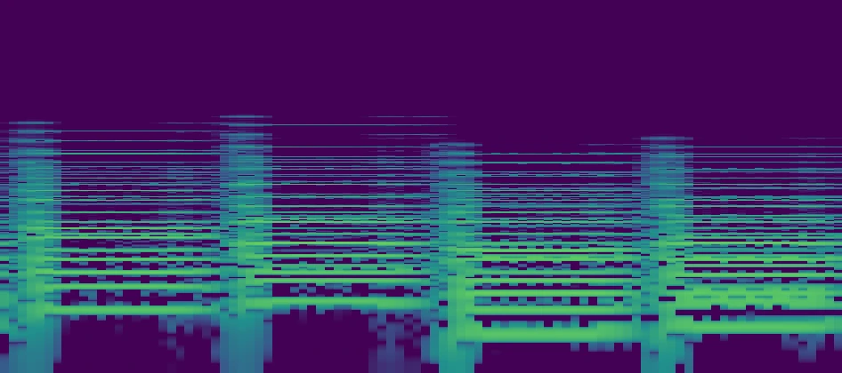
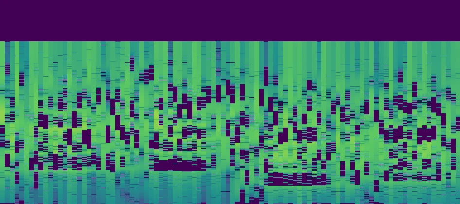
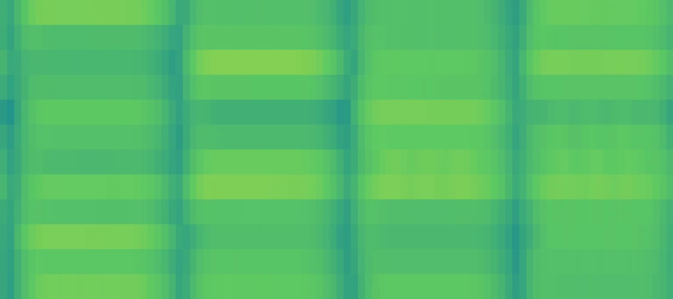
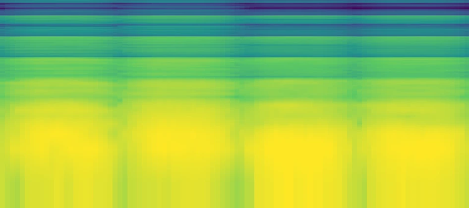
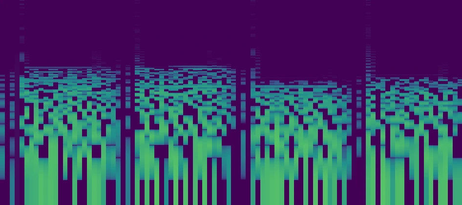
Move between STFT, CQT, VQT, wavelets, Stockwell, reassigned and synchrosqueezed transforms, chroma, and more.
Lock-free audio handoff, bounded queues, overload recovery, and automatic rate limiting keep analysis work away from the audio path.
The implementation, algorithm notes, tests, and build system are available under Apache-2.0 for research, teaching, and engineering work.
Examples
These short examples show how different representations help with sustained harmonics, localized onsets, and pitch-class motion.
Use cases
Compare time-frequency methods on the same live input before committing to one in a larger analysis pipeline.
Investigate masking, resonant tails, low-frequency buildup, and transient overlap using a representation suited to the problem.
Make the trade-offs between time resolution, frequency resolution, perceptual scales, and pitch-based views visible as audio plays.
Inspect modulation, harmonics, tuning, chords, and pitch-class activity without changing the source signal.
Capabilities
Switch the transform, frequency geometry, resolution, update rate, and calibrated color range without interrupting the source. This makes side-by-side reasoning easier and keeps the comparison grounded in the same material.
Move across FFT, filterbank, wavelet, reassigned, quadratic, and pitch-class views.
Use logarithmic frequency, constant-Q spacing, and a piano ruler to read notes and partials.
Set FFT size up to 8,192 points, band count up to 512, and as many as 48 bins per octave.
Adjust speed, cutoff range, Q scale, and VQT gamma for the structure under inspection.
Choose native, logarithmic, or linear layout with explicit dBFS floor and ceiling controls.
Keep audio bit-exact while bounded queues, overload recovery, and rate limiting protect the UI.
Tutorials
These short tours keep the source running while the analysis method and display geometry change, so you can connect each control to its effect on the result.
Watch the same musical phrase pass through all fifteen views while FFT size, bands, bins per octave, Q scale, and VQT gamma sweep across their full ranges.
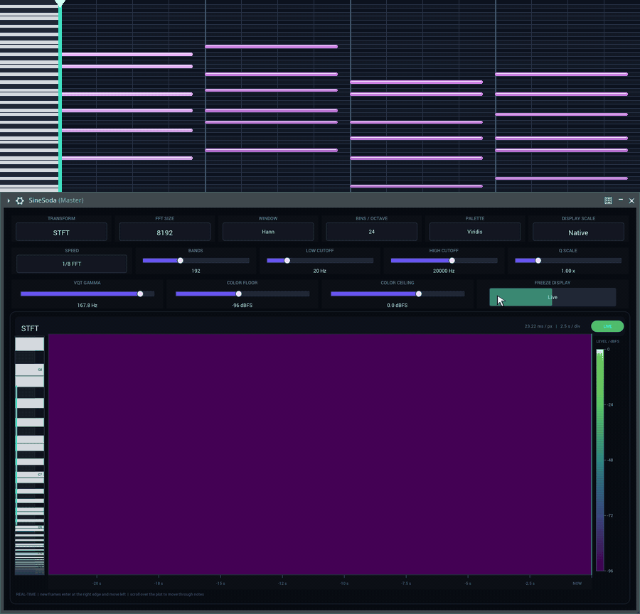
Drag vertically through the scrollable Native and Linear frequency domains, then compare them with the fixed full-range logarithmic view.
Install in three steps
SineSoda.vst3 into your user VST3 folder.